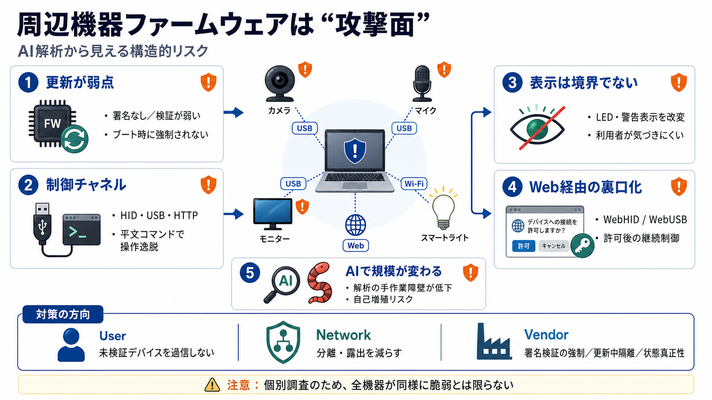

Automated Firmware Extraction and Vulnerability Analysis ...
DOI 10.1109/Cyber-RCI68134.2025.11385254 Publisher IEEE Download date 2026-08-23 19:18:20 Item License Link to Item Au…

周辺機器は“攻撃面”
AIエージェント主導の解析記録から、更新・制御・表示といった要所で防御が弱くなり得る構造的リスクが見える。
前提を揃える
更新の流れ／通信プロトコル（HID・USB・HTTP）の役割／脅威モデル（ローカル接続者・同一ネットワーク利用者など）を意識すると読みやすい。
適用タイミングが検証強制性を左右する。
USB/WiFi/HTTPは制御チャネルにもなる。
ローカル＋Web権限が成立条件になり得る。
“更新”が中心
多くの機器で、ファームウェア更新の防御がほぼ欠落、または改ざん検知が弱い（例：MD5のみ、単純チェック、署名がブート時に強制されない）。
見える安心は無力
表示（LED）やユーザー体験が改変されても、OSや利用者の警戒は働きにくい。プライバシー保護はUI前提になっていないか要点になる。
活動LEDを消しつつ録画できる改変。
ミュート状態とLEDの分離が成立。
“制御”が平文で強い
マイクではUSB HIDベンダークラス経由の平文コマンドシェルが存在し、権限やLED制御を危険な形で提供し得る。
USB → HID（ベンダークラス）
平文コマンド（暗号化なしの想定）
記録・LED・機能操作の逸脱
“表示回避”も改変対象
モニターでは「ピクセルクリーニング」警告を回避するためのファームウェア改変が象徴例として挙げられている。
ユーザー向け安全/保守表示の回避
UI/表示はセキュリティ境界になりにくい
“署名あり”でも負ける
WiFi接続の照明はEd25519署名などを用いるが、更新処理の一点にしか効かず、HTTP経由のUARTペイロードで検証を無効化できる流れが示されている。
OSは全部は保証できない
OSは周辺機器内部の振る舞いを完全には検証できず、悪意のあるファームウェアが音声/映像/入力を越えて意図しない挙動（コマンド実行等）を行う可能性が懸念される。
デバイスは“正しい機能”として動く
通信・制御・更新が別の意味になる
Web経由が“裏口”化
ブラウザ経由の制御が普及し、ユーザー許可が一度通ると、永続的な裏口になり得る点がリスクとして論じられている。
WebHID / WebUSB / WebBluetooth（Web経由）
許可（permission）が前提になる
制御の継続・再利用
スケールが変わる
AIによる解析省力化で、機器ごとの手作業障壁が下がり、将来的に自己増殖型（ワーム）マルウェアの現実味が増すという問題提起がある。
断定は危険
個人調査記録のため、CVE有無・対象バージョン・メーカー対応・再現性の範囲などが不明で、「全機器が同様に脆弱」とは言えない。
影響範囲・修正状況・前提条件
同型だから即被害、は成立しない
防御の要点
結論は「周辺機器をソフトウェア同等に扱う」。更新方針の管理、権限付与の最小化、ネットワーク分離、署名検証の強制や更新中の隔離をメーカーへ求める姿勢が要点になる。
未検証デバイスを過信しない。
露出を減らす（分離・限定）。
ブート強制、隔離、状態真正性。
DOI 10.1109/Cyber-RCI68134.2025.11385254 Publisher IEEE Download date 2026-08-23 19:18:20 Item License Link to Item Au…
of the related work in multiple areas of firmware security including reverse engineering, tool development, auditing mec…
In this article, we’ll take a closer look at five of the most prevalent critical vulnerabilities found in IoT devices, d…
archive # Computer Science > Cryptography and Security # Title:Automatically Attacking Software Reverse Engineering AI…
Security strategies include network segmentation, intrusion detection systems (IDS), and asset visibility tools. IoT Se…